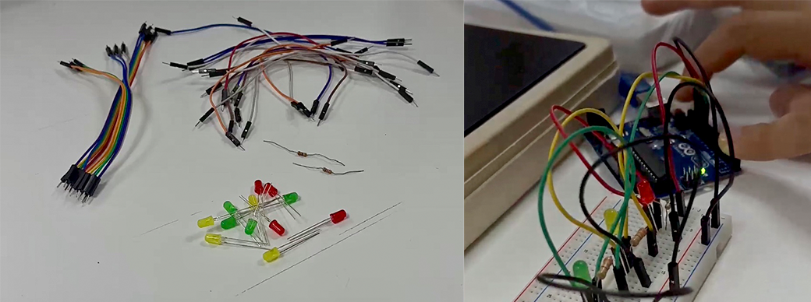

Semana 6
Sesiones 10 & 11
En esta semana hicimos un recuento de la electrónica y la robótica, sus semejanzas, diferencias que estuvimos viendo la sesión pasada, mostrándonos los
componentes básicos y los tipos de Arduino para nuestro proyecto, también el profesor nos hizo una actividad en Quizizz como tema de repaso para saber
como estaba nuestro nivel de conocimiento del curso, haciendo preguntas sobre Arduino, circuitos, temas a fines tocados en clase.
Semana 7
Sesiones 12 & 13
En esta semana continuamos realizando ejercicios en clases para ganar puntos extras como grupo y también nos adentramos más a fondo al proyecto, el profesor nos
preguntó con qué proyecto finalmente nos quedaríamos y nos dió la lista de componentes que necesitaríamos donde dentro de ellos están el Arduino UNO, los leds,
sensor de flujo, resistencias, protoboard, cables macho/hembra, etc; a su vez, indicándonos diferentes tiendas y ubicaciones para conseguir los implementos más
baratos como el Jr. Paruro en el Centro de Lima que es más accesible, hasta tiendas como Mastertronics, Saisac, Naylamp Mechatronics, entre otros.
Para la siguiente clase realizamos un curso sobre Inteligencia Artificial de la página IBM Skills, con la finalidad de seguir aprendiendo y conociendo más sobre
las inteligencias y sus aportes a la sociedad.
Semana 8
Sesiones 14 & 15

En esta semana todos los grupos llevaron sus materiales y empezamos a desarrollar una primera parte de nuestros proyectos con ayuda del profesor, aquí adjunto algunas
fotografías de los materiales y procesos que realizamos. Para la última clase de la semana en modalidad virtual, estuvimos avanzando el tema del diagrama de flujo a
tema de repaso y como lo implementaremos para nuestros proyectos grupales, y eso fue todo por la semana de clases del curso.